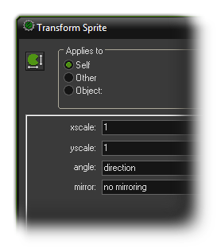

Tutorial
Page 13 of 15
Final Polish - The Clown
Even though the clown speeds up every click, it is still quite easy to click on it as the direction it moves in is always a straight line. To make it more difficult we will let the clown change its direction of motion from
time to time. To this end we are going to use an alarm. Each instance can have multiple alarms (up to 12) and these alarms tick down every step (game tick) and at the moment they reach 0 the associated
Alarm Event happens.
In the creation event of the clown we will set the alarm, and in the alarm event we will change the direction of motion and set the alarm again. To do this, follow these steps:
- Reopen the clown object by double clicking on it in the resource list at the left of the window.
- Select the Create event and from the Main2 tab add a Set Alarm action.
- In a game, time is split into steps and the steps are defined by the room speed, which is the number of steps that the game has to complete per second. The default is 30, so the game completes 30 steps
in every second of real time. So, the alarm is calculated in steps and we want it to run every two seconds, so there we should have a value of 60 (two times the current room speed). the alarm number should be left as 0, as it is
the Alarm[0] Event that we are wanting to trigger.
- Click on Add Event and choose the button Alarm, then from the pop-up menu select Alarm 0. In the event include the Move Fixed action (from the move tab), select all eight arrows and set the speed to 0 but,
unlike previous uses of this action, enable the Relative property. In this way 0 is added to the speed, that is, it does not change.
- To set the alarm clock again, include another Set Alarm action, and set it to 60 steps for Alarm[0], exactly as before. This will cause a loop in the alarm and it will now run every 2 seconds of your game.
Test your game again now and you'll find that it presents much more of a challenge than previously!
We can also make the clown face the direction that it is moving in. As you can see, the sprite is currently facing to the right, and in GameMaker:Studio, this represents 0º. So, what we want to do is add in an action to change the
angle the sprite is drawn at every time it changes direction. So, we need to go to Main1 tab and select the Transform Sprite action:
In this action, you can scale the sprite, rotate the sprite and also mirror the sprite around the horizontal or vertical axis, but for now we just need to use the angle. In the space provided write the word "direction".
This is a special variable that GameMaker:Studio uses to get the angle at which an instance is moving, and placing it here will now make the sprite angle rotate to face the direction of movemnt.

Go ahead and place copies of this new action in each event of the clown object, after the actions that change it's direction.
Click on the Next button to go to the next page of the tutorial.